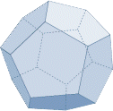

Phi
Color
Harmony
 Space Strings
Quantum Beauty
Music of the Spheres
"Aurora" by Mike Oldfield,
...from the two-part album entitled
Music of the Spheres
(2008)
Grey-eyed Athena! Your browser doesn't support the music on this page.
silence the music
Phi
The Golden Ratio: 1.618
Color
HCL / HSV Color Spaces
Harmony
Pythagorean Harmonic Ratios
Space Strings
Jukebox Universalis: a space instrument
Quantum Beauty
Frank Wilczek's Beautiful Question